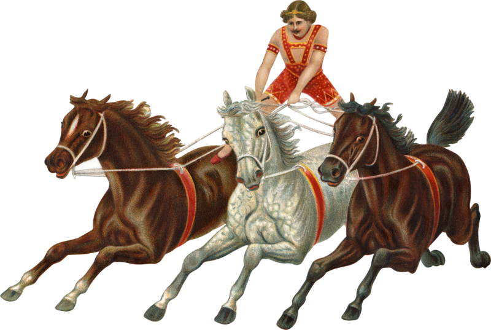

Les images décoratives n’ajoutent pas d’information utile à une page, tandis que les images redondantes ont du contenu déjà transmis dans le texte adjacent. Exemples de décoratives:
Une image redondante est adjacente à du texte qui communique déjà l’information transmise par l’image. Par exemple, dans une boutique en ligne, l’image d’un produit se trouve directement au-dessous d’un titre donnant le nom du produit. Un texte de remplacement identifiant le produit serait redondant.
Suivez les pratiques exemplaires suivantes pour ce qui a trait aux Images décoratives ou redondantes:
alt des éléments <img>.alt null (alt="") pour que la technologie d’assistance n’ait pas accès aux images décoratives our redondantes.role=presentation cache également des éléments, même s’il n’est pas aussi largement pris en charge que l’attribut alt null.Dans cet exemple, une photo de banque d’images montrant des employés de bureau est considérée comme décorative puisqu’elle ne contient aucun renseignement pertinent pour la page où elle figure. Une photo de banque d’images montrant des employés de diverses ethnies est instructive si l’intention consiste à montrer que l’employeur valorise l’équité, la diversité et l’inclusivité; dans ce cas, le texte de remplacement pourrait ressembler à « Chez [nom de l’organisation], nous valorisons la diversité. » Mais en général, les photos de banque d’images sont décoratives.
HTML
Début du code
<img src="staff.jpg" alt="">Fin du code
L’image ci-dessous est déjà suffisamment décrite par le texte adjacent. Une valeur alt nulle (vide) peut être utilisée puisqu’il n’est pas nécessaire de répéter cette information.
L'exemple commence

À cette époque, un artiste de cirque pouvait contrôler trois chevaux avec leurs rênes, debout sur le dos d’un cheval.
L'exemple finit
HTML
Début du code
<img src="horses.jpg" alt="">
<p>À cette époque, un artiste de cirque pouvait contrôler trois chevaux avec leurs rênes, debout sur le dos d’un cheval.</p>
Fin du code